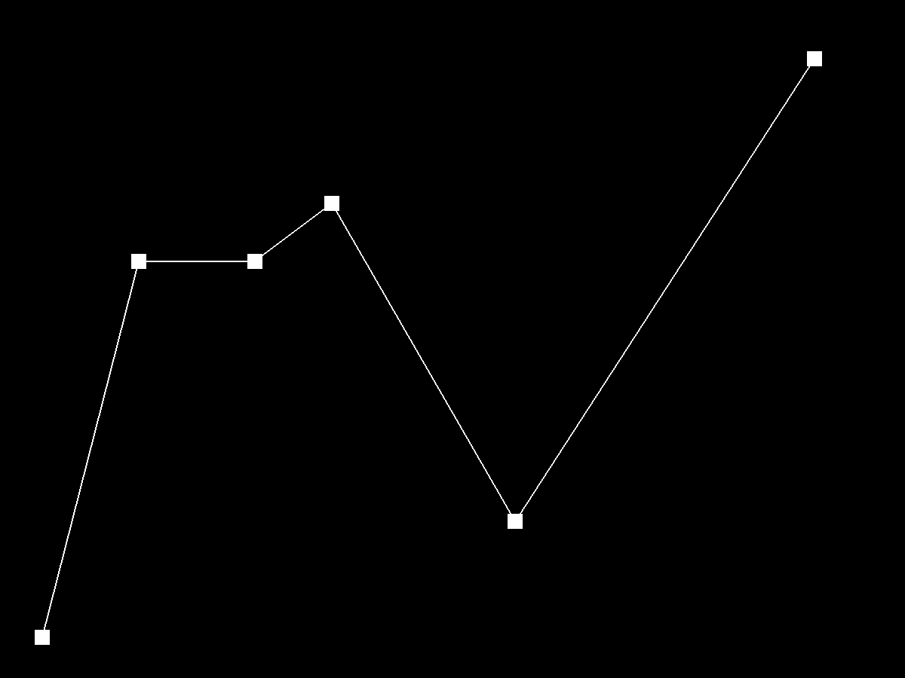
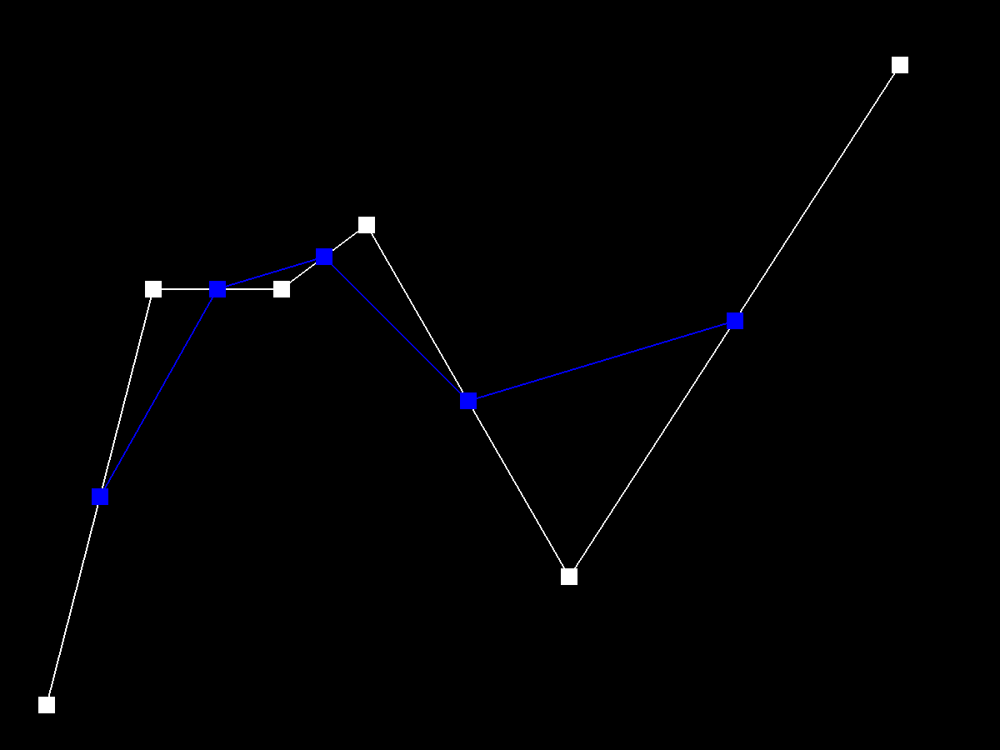
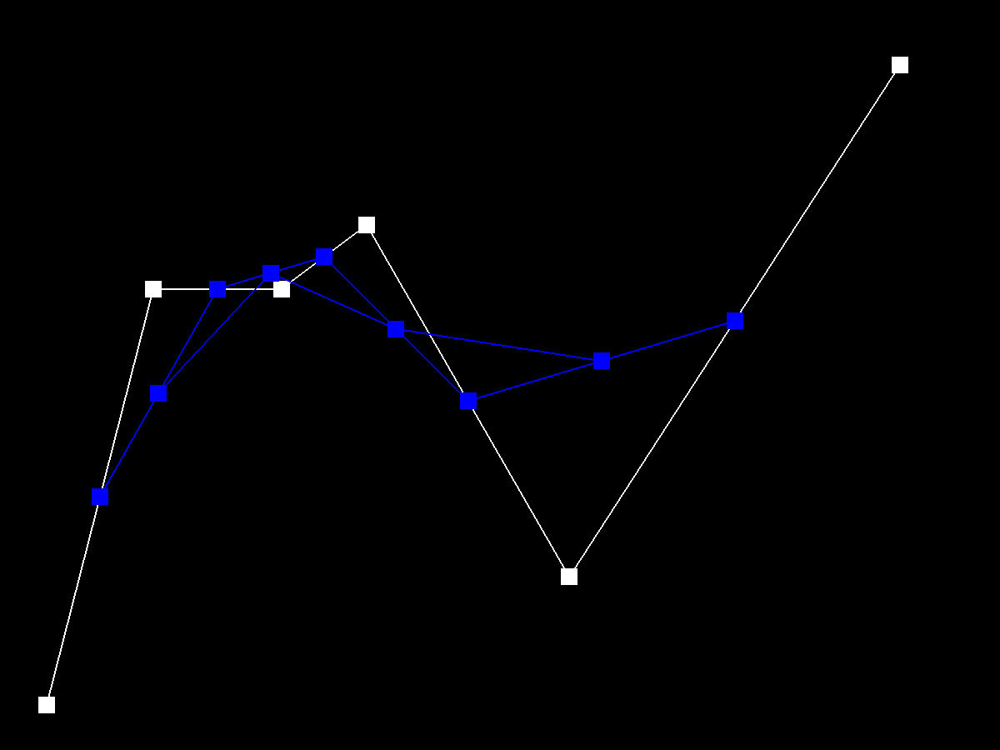
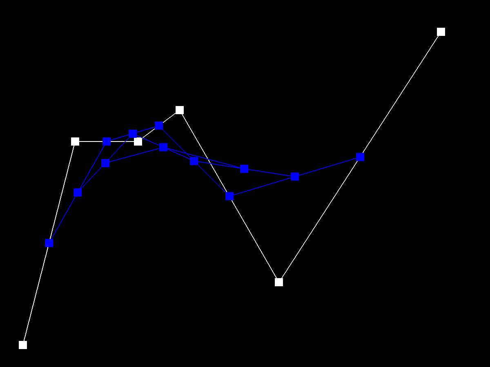
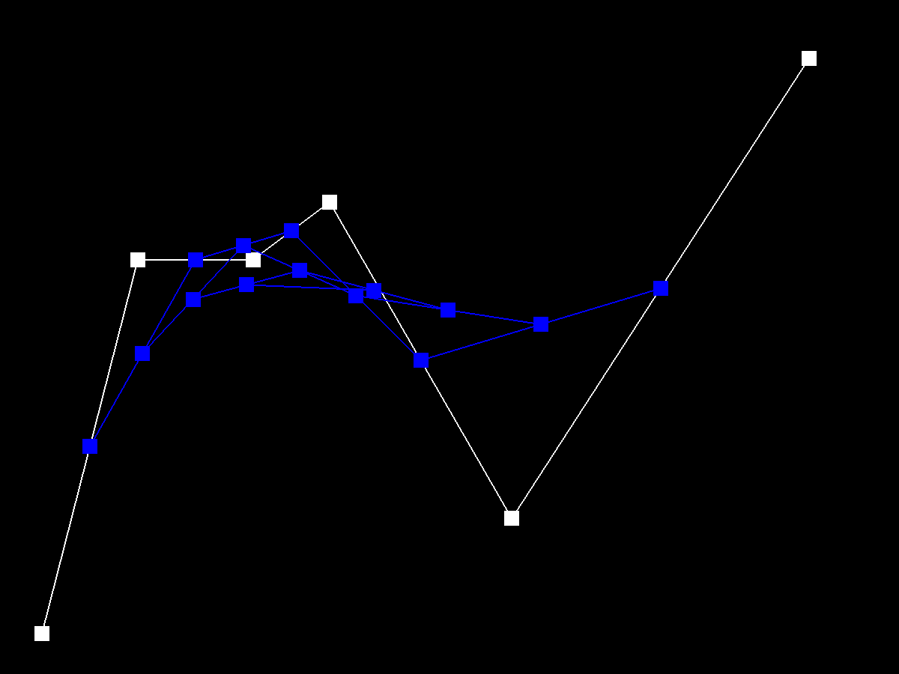
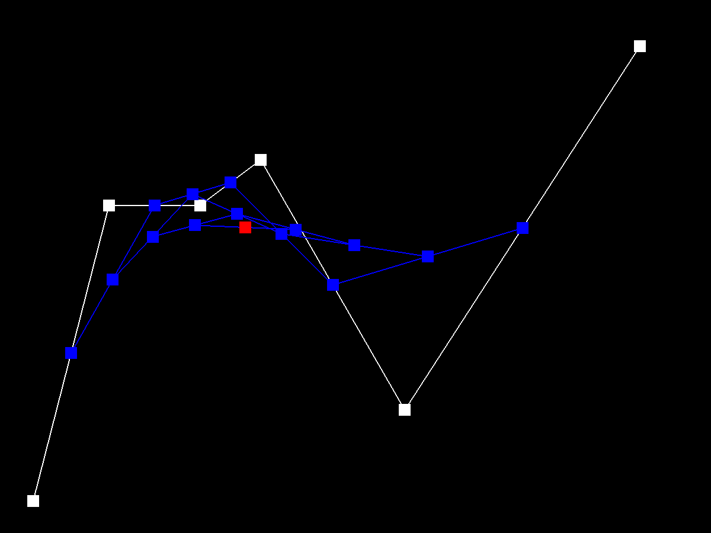
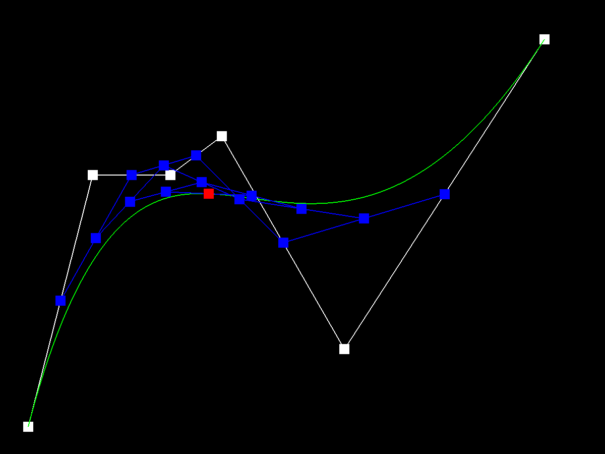
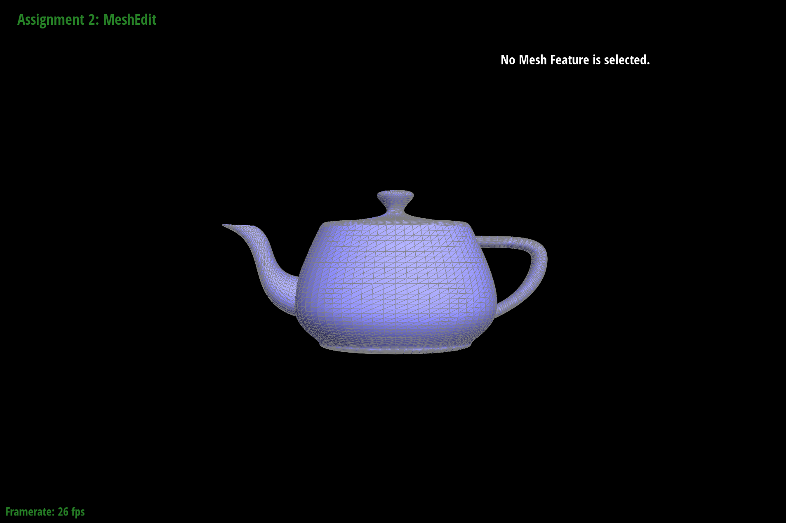
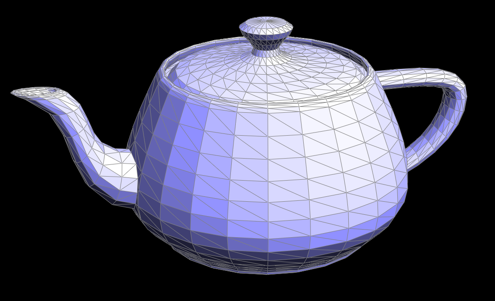
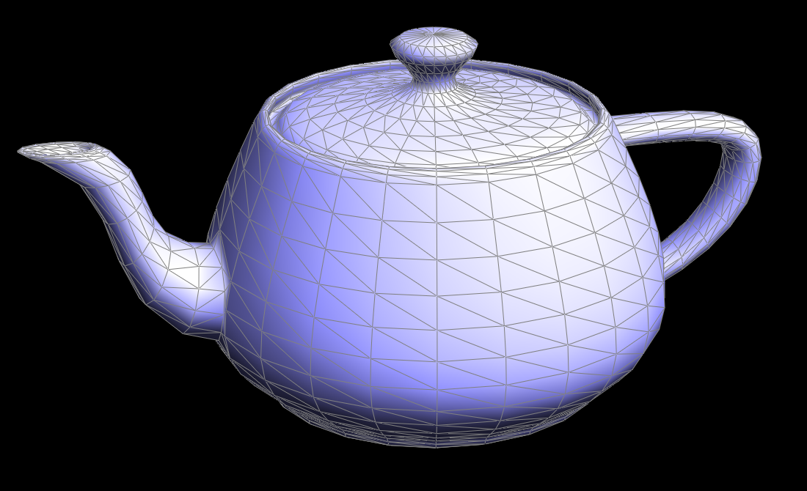

Sussy imposter
This task was completed relatively smoothly once we understood how to work with the vector of Vector2Ds. Initially, we had attempted breaking down the Vector2D into its x and y components; once we later tried directly using multiplication on the vector, writing evaluateStep() was a smooth experience.
De Casteljau's algorithm uses recursive linear interpolations on an ordered series of "control points" to find a point lying on a Bezier curve parameterized using the algorithm. A parameter t between 0 and 1 defines how far along a line we are finding the next control point, up to a point on the Bezier curve itself. Between every two control points, we generate a new control point for use in the next step of the algorithm. This new control point lies a ratio of t away from the first old control point and 1 - t away from the second old control point. This process will generate one fewer new control points than there were old control points for every step. Through enough interpolation steps, this algorithm will produce a single point; this point lies at t into the curve from 0 to 1. For our evaluateStep() implementation that we use for this project, we define a new C++ vector of Vector2Ds to be returned. The Vector2D result of each linear interpolation of two control points is pushed to the larger vector of Vector2Ds, and this vector of vectors is returned, bringing us a step closer to evaluating a point on the Bezier curve. By evaluating t continuously between 0 and 1, we plot out the full Bezier curve we have defined.
     Above, we see a 6 control point Bezier curve being evaluated through all the steps up to the final point on the curve. Below, we see the completed Bezier curve, as well as a similar curve modified through manipulation of the control points and parameter t.

An initial design problem we encountered was how to fit evaluateStep(), evaluate1D(), and evaluate() together to find a single point on the Bezier curve. Realizing that evaluate1D() can be applied on any axis was a major breakthrough for completing this part successfully.
De Casteljau's algorithm can be used for Bezier surfaces by multiple applications of the algorithm on different axes to find a point on the surface. For a point (u, v) on an n x n grid of control points, we start evaluating each Bezier curve drawn using each row of control points for the u-points at parameter u. These u-points line up in a column, defining one more Bezier curve which we may evaluate using parameter v to get the point (u,v) of the Bezier surface. In our implementation, we make use of the same Bezier curve step evaluation function as in Task 1, except now using Vector3Ds. evaluate1D() is a function we use to repeatedly run evaluateStep() until we reach the final vector that lies on the Bezier curve itself. evaluate() goes through the full process of evaluating (u,v) on the Bezier surface.
Below, we see teapot.bez evaluated by our applications of De Casteljau's algorithm.
Calculating the face normals and how to combine them for the vertex normal required understanding what a cross product represented and time to reason about vectors in 3D space. We had originally attempted to make the normal() function included for halfEdgeMesh faces but came to realize that this task is easier done by calculating face normals using our own method.
Our implementation of area-weighted vertex normals calculates the cross products of all the faces adjoining a given vertex, sums these cross products up, and returns the unit vector of this sum.
To find the area of a face, we find the three Vector3D positions of the face, get two of the vectors bounding the face by subtracting the outlying positions from the position of the "root" vertex that we are calculating the vertex normal for, and then taking the cross product of those two vectors. We do not divide by half in accordance with the standard triangle area equation, as the weighting done by the face normals would have the same ratio with each other, resulting in the vertex normal facing the right direction regardless and produce the desired unit vector.
 Above, we see our teapot with default flat shading, and Phong shading taking advantage of our area-weighted vertex normal calculations.
There have not been significant problems with this part as we comprehensively reassigned all potentially affected pointers and deleted the reassignments that had no effect on our edge flip.
We have implemented the edge flip operation by taking into consideration all mesh elements (halfedge, edge, face, vertex) associated with the two faces next to the edge we are flipping. All pointers are considered in our implementation, and ones that are changed are updated appropriately. As the halfedge instances store most of the info, a bulk of the pointer changes comes from the reassignments of halfedge pointers, with the face and vertex pointers also updated to guarantee they do not reference a moved halfedge. If an edge is on a boundary, we return the edge without doing any pointer modifications. Our debugging for this task was surprisingly uneventful.


One big problem we ran into was while we were implementing sample_nearest. The function seemed straightforward enough to code, but when we ran tests we were getting blank screens. We soon realized that uv[0] and uv[1] were both values in the range [0,1], while the texture is much larger than that. Multiplying uv[0] by mip.width and uv[1] by mip.height fixed our problem. Additionally, we had to spend a lot of time on edge cases, especially within the sample_bilinear function. The two main sets of edge cases we wrote code for were if the sample point was on any of the 4 corners of the bounds (e.g. 0,0) or if a point was on an edge (e.g. x is 0 and y is nonzero).
When you’re rasterizing textured shapes, you can go about sampling texture values in a couple ways. First, if you sample pixels using nearest-pixel sampling, you simply pick the texture sample closest to the point you’re trying to sample and add its color value to the sample buffer. Instead, if you sample pixels using bilinear sampling, you look at the 4 nearest samples, calculate each of their relative distances from the location you’re trying to sample, then run 2D linear interpolation on those 4 points, using their relative distances as weights. Add the output color of that calculation to the sample buffer.

Top Left: nearest pixel, sample rate 1, Top Right: nearest pixel, sample rate 16, Bottom Left: bilinear, sample rate 1, Bottom Right: bilinear, sample rate 16
Relative differences: For the orange part of the texture for nearest pixel, there is a lot of randomness with the shades of each pixel, while bilinear is a lot more smoother and constant in color. Additionally, the bilinear sampled picture both look a bit more “blurry” than their nearest sample counterparts.
Filling out the sample function took the most of our time here. We had to account for 6 cases, where psm could equal 0 or 1, and lsm could equal 0,1, or 2. Cases lsm = 0, psm = 0 and lsm = 0, psm = 1 were easy because we had already implemented them in Task 5. Cases lsm = 1, psm = 0 and lsm = 1, psm = 1 were similarly simple, as all we had to do was make a slight change to our level input. Cases lsm = 2, psm = 0 and lsm = 2, psm = 1 were most difficult, because we had to implement a lerp() function for each. For the former case, we had to calculate the continuous and rounded mipmap level for the sample, and based on which was bigger, determined our x value for lerp(x, sample_nearest(sp.p_uv, D1), sample_nearest(sp.p_uv, D2)). For the latter case, we applied the trilinear filtering outlined in the slides and again had to calculate two mipmap levels; this time a continuous and a floored level. We ended up returning lerp(D - floorD, sample_bilinear(sp.p_it uv, floorD), sample_bilinear(sp.p_uv, floorD + 1)).
Level sampling takes advantage of sampling at different resolutions recursively to get a gradient of different "zooming" levels of the same image for use when rasterizing textures on triangles. For our implementation, we find the barycentric coordinates for a triangle, and then load values that we find into a SampleParams struct. The optimal mipmap level is the found using the algorithm from lecture derived from multiple uses of the Pythagorean Theorem and finding the max. Here, we have the values we use for level sampling. Nearest level sampling may be used by rounding the mipmap to the closest value, while linear level sampling involves an interpolation of a proportion of the level higher and lower than the calculated float mipmap level as determined by the precise level calculation.
With the completion of this project we are now able to use both nearest pixel and bilinear pixel sampling with level sampling configurations where we can use the zeroth mipmap level, nearest mipmap level, or linearly sampled mipmap level; thus, trilinear sampling is now one of the possible sampling methods we are able to utilize. A complete pipeline from svg files to triangle rasterization to sampling is now complete, allowing us to fully utilize the potential of our rasterizer.
Level sampling increases the memory usage of through the extra overhead a mipmap requires over a simple 2D texture and lowers speed, but improves antialiasing efforts. Pixel sampling takes time to run bilinear interpolation and calculation but can be faster than level sampling. Supersampling and calculating subpixels takes quadratically more time with sample rate, does not require the same memory overhead as mipmaps and is particularly effective for smoothing edges. Increasing the sampling rate improves antialiasing, but also requires more memory usage and lowers the speed.

Top Left: L_ZERO and P_NEAREST, Top Right: L_ZERO and P_LINEAR, Bottom Left: L_NEAREST and P_NEAREST, Bottom Right: L_NEAREST and P_LINEAR
Our webpage is at https://cal-cs184-student.github.io/sp22-project-webpages-Lukatastic/proj2/index.html